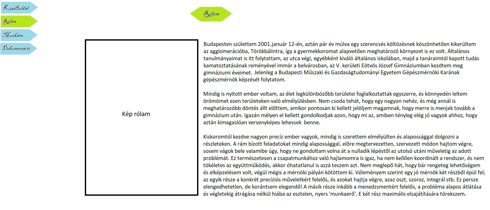

Dokumentáció
Alapvetően motiváltan álltam neki a feladatnak, mert láttam a hasznosságát, de azért az elején nem voltam túlságosan lelkes, főleg a számtalan felmerülő nehézség miatt. Soha nem készítettem még weblapot ilyen módon, így ez várható volt.
Az eredeti koncepció, grafikai elképzelés a következőképpen nézett ki:

Amint az látható, a végeredmény jócskán eltér a vázlatomtól. Vegyük hát sorra, hogy min, miért, és hogyan változtattam:
Már az első pillanatban látszódott, hogy ez a design nem lesz kivitelezhető az én tudásommal a navigációs felületet, illetve az oldalon megjelenő címeket értve, úgyhogy erről hamar lemondtam. A terv az volt, hogy az egér rámutatásával az adott mező háttere elzöldül, míg ez a háttér alapvetően a vázlaton is látható kék színű.
A navigációs felület elrendezését mindenképpen az eredeti tervek szerint szerettem volna megvalósítani, azaz egymás alá elhelyezni az egyes füleket. Sajnos ez az ötletem sem jött be, megint csak egyszerűbb volt módosítani, és inkább egy sorban megoldani az egészet.
Az eredeti terv szerint valami féle absztarkt kép lett volna a háttér, ez azonban megint csak annyi akadályba ütközött, hogy úgy döntöttem, maradok az egyszerű színeknél. Utólag egyébként nem bántam meg, az összkép sokkal letisztultabb így.
Alapvetően elrendezést tekintve nagyjából így nézett volna ki az eredeti terveim szerint is a portfólió, az apró módosítások (leginkább a képek és szövegek pozicionálása) általában azért történtek, mert egyszerűbb volt így a kivitelezés.